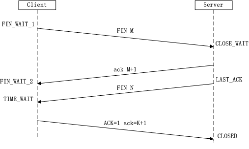
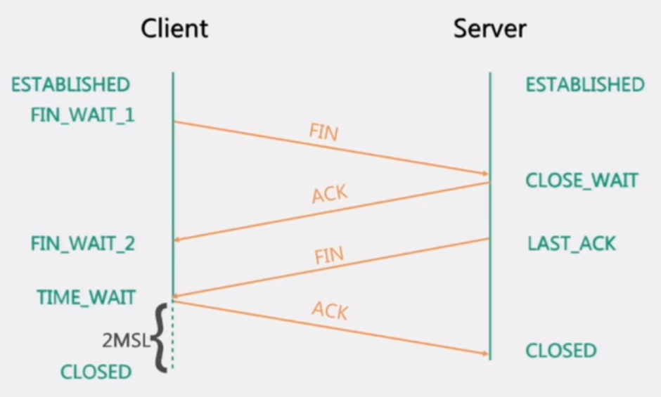

在介绍TCP协议之前，需要先了解一下4/7层网络模型
4/7层网络模型
TCP特点
- 基于链接(点对点)
- 双工通信
- 可靠传输
- 拥塞控制,在网络状况不佳的时候尽量降低系统由于重传带来的带宽开销
- 基于字节流而非报文
建立链接三次握手
三次握手，简单来说，就是：
- 发送方：我要和你建立链接了哦!
- 接收方：你真的要和我建立链接吗?
- 发送方：我真的要和你建立链接(成功).
SYN: (同步序列编号,Synchronize Sequence Numbers)
ACK: (确认编号,Acknowledgement Number)
FIN: (结束标志,FINish)

- 第一次握手：Client 将标志位 SYN=1 ，随机产生一个值 seq=J ，并将该数据包发送给 Server 。此时，Client 进入SYN_SENT 状态，等待 Server 确认。
- 第二次握手：Server 收到数据包后由标志位 SYN=1 知道Client请求建立连接，Server 将标志位 SYN 和 ACK 都置为 1 ，ack=J+1，随机产生一个值 seq=K ，并将该数据包发送给 Client 以确认连接请求，Server 进入 SYN_RCVD 状态。此时，Server 进入 SYC_RCVD 状态。
- 第三次握手：Client 收到确认后，检查 ack 是否为 J+1 ，ACK 是否为 1 。
- 如果正确，则将标志位 ACK 置为 1 ，ack=K+1 ，并将该数据包发送给 Server 。此时，Client 进入 ESTABLISHED 状态。
- Server 检查 ack 是否为 K+1 ，ACK 是否为 1 ，如果正确则连接建立成功。此时 Server 进入 ESTABLISHED 状态，完成三次握手，随后 Client 与 Server 之间可以开始传输数据了。
仔细看来，Client 会发起两次数据包，分别是 SYNC 和 ACK ；Server 会发起一次数据包，包含 SYNC 和 ACK 。也就是说，三次握手的过程中，Client 和 Server 互相做了一次 SYNC 和 ACK
为什么TCP连接需要三次握手，两次不可以么? 这主要是为了防止已失效的连接请求报文突然又传送到了服务端，因而产生错误。防止服务器端一直等待而浪费资源。
“已失效的连接请求报文段”的产生在这样一种情况下：client发出的第一个连接请求报文段并没有丢失，而是在某个网络结点长时间的滞留了，以致延误到连接释放以后的某个时间才到达server。本来这是一个早已失效的报文段。但server收到此失效的连接请求报文段后，就误认为是client再次发出的一个新的连接请求。于是就向client发出确认报文段，同意建立连接。假设不采用“三次握手”，那么只要server发出确认，新的连接就建立了。由于现在client并没有发出建立连接的请求，因此不会理睬server的确认，也不会向server发送数据。但server却以为新的运输连接已经建立，并一直等待client发来数据。这样，server的很多资源就白白浪费掉了。采用“三次握手”的办法可以防止上述现象发生。例如刚才那种情况，client不会向server的确认发出确认。server由于收不到确认，就知道client并没有要求建立连接。”
关闭链接四次挥手
四次挥手，简单来说，就是：
- 发送方：我要和你断开连接！
- 接收方：好的，断吧。
- 接收方：我也要和你断开连接！
- 发送方：好的，断吧。


- 第一次挥手: Client 发送一个 FIN=M ，用来关闭 Client 到 Server 的数据传送。此时，Client 进入 FIN_WAIT_1 状态。
- 第二次挥手: Server 收到 FIN 后，发送一个 ACK 给 Client ，确认序号为 M+1（与 SYN 相同，一个 FIN 占用一个序号）。此时，Server 进入 CLOSE_WAIT 状态。注意，TCP 链接处于半关闭状态，即客户端已经没有要发送的数据了，但服务端若发送数据，则客户端仍要接收。
- 第三次挥手: Server 发送一个 FIN=N ，用来关闭 Server 到 Client 的数据传送。此时 Server 进入 LAST_ACK 状态。
- 第四次挥手: Client 收到 FIN 后，此时 Client 进入 TIME_WAIT 状态。接着，Client 发送一个 ACK 给 Server ，确认序号为 N+1 。Server 接收到后，此时 Server 进入 CLOSED 状态，完成四次挥手。
为什么要四次挥手
那四次分手又是为何呢？TCP协议是一种面向连接的、可靠的、基于字节流的运输层通信协议。TCP是全双工模式，这就意味着，当主机1发出FIN报文段时，只是表示主机1已经没有数据要发送了，主机1告诉主机2，它的数据已经全部发送完毕了；但是，这个时候主机1还是可以接受来自主机2的数据；当主机2返回ACK报文段时，表示它已经知道主机1没有数据发送了，但是主机2还是可以发送数据到主机1的；当主机2也发送了FIN报文段时，这个时候就表示主机2也没有数据要发送了，就会告诉主机1，我也没有数据要发送了，之后彼此就会愉快的中断这次TCP连接。如果要正确的理解四次分手的原理，就需要了解四次分手过程中的状态变化。
- FIN_WAIT_1: 这个状态要好好解释一下，其实FIN_WAIT_1和FIN_WAIT_2状态的真正含义都是表示等待对方的FIN报文。而这两种状态的区别是：FIN_WAIT_1状态实际上是当SOCKET在ESTABLISHED状态时，它想主动关闭连接，向对方发送了FIN报文，此时该SOCKET即进入到FIN_WAIT_1状态。而当对方回应ACK报文后，则进入到FIN_WAIT_2状态，当然在实际的正常情况下，无论对方何种情况下，都应该马上回应ACK报文，所以FIN_WAIT_1状态一般是比较难见到的，而FIN_WAIT_2状态还有时常常可以用netstat看到。（主动方）
- FIN_WAIT_2：上面已经详细解释了这种状态，实际上FIN_WAIT_2状态下的SOCKET，表示半连接，也即有一方要求close连接，但另外还告诉对方，我暂时还有点数据需要传送给你(ACK信息)，稍后再关闭连接。（主动方）
- CLOSE_WAIT：这种状态的含义其实是表示在等待关闭。怎么理解呢？当对方close一个SOCKET后发送FIN报文给自己，你系统毫无疑问地会回应一个ACK报文给对方，此时则进入到CLOSE_WAIT状态。接下来呢，实际上你真正需要考虑的事情是察看你是否还有数据发送给对方，如果没有的话，那么你也就可以 close这个SOCKET，发送FIN报文给对方，也即关闭连接。所以你在CLOSE_WAIT状态下，需要完成的事情是等待你去关闭连接。（被动方）
- LAST_ACK: 这个状态还是比较容易好理解的，它是被动关闭一方在发送FIN报文后，最后等待对方的ACK报文。当收到ACK报文后，也即可以进入到CLOSED可用状态了。（被动方）
- TIME_WAIT: 表示收到了对方的FIN报文，并发送出了ACK报文，就等2MSL后即可回到CLOSED可用状态了。如果FINWAIT1状态下，收到了对方同时带FIN标志和ACK标志的报文时，可以直接进入到TIME_WAIT状态，而无须经过FIN_WAIT_2状态。（主动方）
- CLOSED: 表示连接中断。
2MSL - 报文最大生存时间
2MSL即两倍的MSL，TCP的TIME_WAIT状态也称为2MSL等待状态，当TCP的一端发起主动关闭，在发出最后一个ACK包后，即第3次握手完成后发送了第四次握手的ACK包后就进入了TIME_WAIT状态，必须在此状态上停留两倍的MSL时间，等待2MSL时间主要目的是怕最后一个ACK包对方没收到，那么对方在超时后将重发第三次握手的FIN包，主动关闭端接到重发的FIN包后可以再发一个ACK应答包。在TIME_WAIT状态时两端的端口不能使用，要等到2MSL时间结束才可继续使用。当连接处于2MSL等待阶段时任何迟到的报文段都将被丢弃。不过在实际应用中可以通过设置SO_REUSEADDR选项达到不必等待2MSL时间结束再使用此端口。
报文状态标志于连接状态
- CLOSED: 表示初始状态。
- LISTEN: 表示服务器端的某个SOCKET处于监听状态，可以接受连接。
- SYN_SENT:在服务端监听后，客户端SOCKET执行CONNECT连接时，客户端发送SYN报文，此时客户端就进入
SYN_SENT状态，等待服务端的确认 - SYN_RCVD: 表示服务端接受到了SYN报文，在正常情况下，这个状态是服务器端的SOCKET在建立TCP连接时的三
次握手会话过程中的一个中间状态，很短暂，基本上用netstat你是很难看到这种状态的，除非你特意写了一
个客户端测试程序，故意将三次TCP握手过程中最后一个ACK报文不予发送。因此这种状态时，当收到客户端的
ACK报文后，它会进入到ESTABLISHED状态。 - ESTABLISHED: 表示连接已经建立了。
- FIN_WAIT_1: 这个是已经建立连接之后，其中一方请求终止连接，等待对方的FIN报文。FIN_WAIT_1状态是当
SOCKET在ESTABLISHED状态时，它想主动关闭连接，向对方发送了FIN报文，此时该SOCKET即进入到FIN_WAIT_1
状态。而当对方回应ACK报文后，则进入到FIN_WAIT_2状态，当然在实际的正常情况下，无论对方何种情况下
，都应该马上回应ACK报文，所以FIN_WAIT_1状态一般是比较难见到的，而FIN_WAIT_2状态还有时常常可以用
netstat看到。 - FIN_WAIT_2: 实际上FIN_WAIT_2状态下的SOCKET，表示半连接，也即有一方要求close连接，但另外还告诉对
方，我暂时还有点数据需要传送给你，稍后再关闭连接。 - TIME_WAIT: 表示收到了对方的FIN报文，并发送出了ACK报文，就等2MSL后即可回到CLOSED可用状态了。如果
FIN_WAIT_1状态下，收到了对方同时带FIN标志和ACK标志的报文时，可以直接进入到TIME_WAIT状态，而无须
经过FIN_WAIT_2状态。 - CLOSING: 这种状态比较特殊，实际情况中应该是很少见，属于一种比较罕见的例外状态。正常情况下，当你
发送FIN报文后，按理来说是应该先收到(或同时收到)对方的ACK报文，再收到对方的FIN报文。但是CLOSING状
态表示你发送FIN报文后，并没有收到对方的ACK报文，反而却也收到了对方的FIN报文。什么情况下会出现此
种情况呢？其实细想一下，也不难得出结论：那就是如果双方几乎在同时close一个SOCKET的话，那么就出现
了双方同时发送FIN报文的情况，也即会出现CLOSING状态，表示双方都正在关闭SOCKET连接。 - CLOSE_WAIT: 这种状态的含义其实是表示在等待关闭。怎么理解呢？当对方close一个SOCKET后发送FIN报文给
自己，你系统毫无疑问地会回应一个ACK报文给对方，此时则进入到CLOSE_WAIT状态。接下来呢，实际上你真
正需要考虑的事情是察看你是否还有数据发送给对方，如果没有的话，那么你也就可以close这个SOCKET，发
送FIN报文给对方，也即关闭连接。所以你在CLOSE_WAIT状态下，需要完成的事情是等待你去关闭连接。 - LAST_ACK: 这个状态还是比较容易好理解的，它是被动关闭一方在发送FIN报文后，最后等待对方的ACK报文。
当收到ACK报文后，也即可以进入到CLOSED可用状态了。
Nagel算法与ACK延迟
滑动窗口与流量控制
滑动窗口协议（Sliding Window Protocol），属于TCP协议的一种应用，用于网络数据传输时的流量控制，以避免拥塞的发生。该协议允许发送方在停止并等待确认前发送多个数据分组。由于发送方不必每发一个分组就停下来等待确认，因此该协议可以加速数据的传输，提高网络吞吐量。
TCP采用可变滑动窗口来实现流量控制。TCP连接的两端交互作用，互相提供数据流的相关信息，包括报文段序列号、ACK号和窗口大小（即接收端的可用空间）。发送端根据这些信息动态调节窗口大小来控制发送，以达到流量控制的目的。每个TCP头部的窗口大小字段表明接收端可用缓存空间的大小，以字节为单位。该字段长度为16位，但窗口缩放选项可用大于65535的值。报文段发送方在相反方向上可接受的最大序列号值为TCP头部中ACK号和窗口大小字段之和（单位保持一致）。